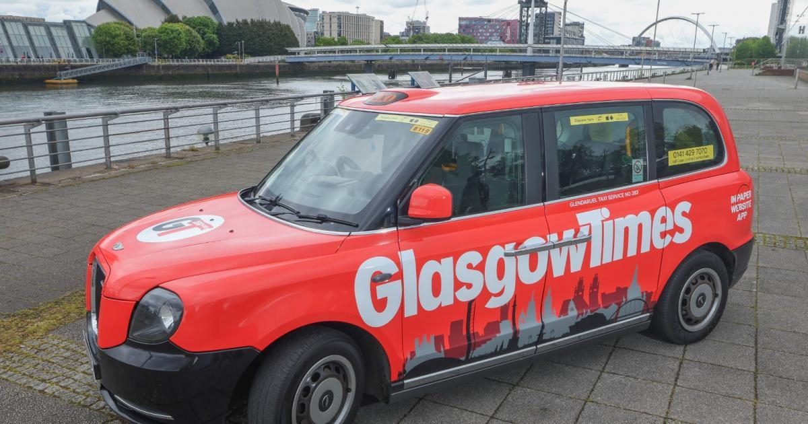
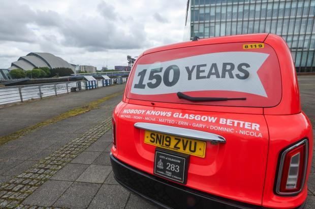
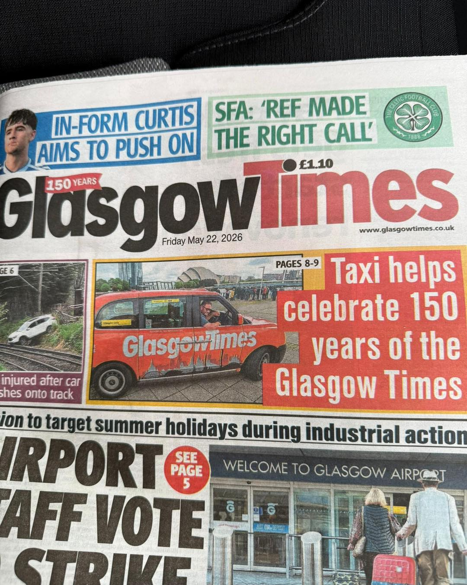

150 Years
Design and brand work across print, digital and out-of-home — marking 150 years of Glasgow's own paper.
Design and brand work across print, digital and out-of-home — marking 150 years of Glasgow's own paper.
Glasgow Times marked its 150th anniversary in 2026 with a campaign spanning out-of-home, digital and print. The work covers a wrapped taxi touring the city, a roll-up banner for the paper's newsletter arm, competition creative for online display, and the front pages that carried the celebration home.
A full vehicle wrap marking 150 years, touring Glasgow and picking up press coverage of its own.
Stand banner for The Glasgow Wrap, the paper's ad-free daily newsletter on Substack.
Online display for reader competitions and partner promotions, built for web and app.
Daily front page design and masthead lockups carrying the paper's identity into print.
Take the masthead off the page and onto the street — a working black cab wrapped end to end, marking the paper's 150th year in a bold, unmissable way across the city.


The taxi did its job twice over — once on the road, and again as a story in itself. Glasgow Times ran its own front-page feature on the wrap, turning the campaign into earned coverage.

A short mobile edit of the taxi wrap, cut for social and on-site placements alongside the campaign's online display creative.
Mark 150 years in a way that felt earned, not just decorative — something people would notice on the street, not just in print.
Take the masthead physically into the city, then let the paper cover its own campaign as a genuine news story.
A full taxi wrap, a roll-up banner for the newsletter arm, digital display creative and a dedicated front-page feature.
Earned press coverage on top of the paid campaign — the wrap became a front-page story in its own right.